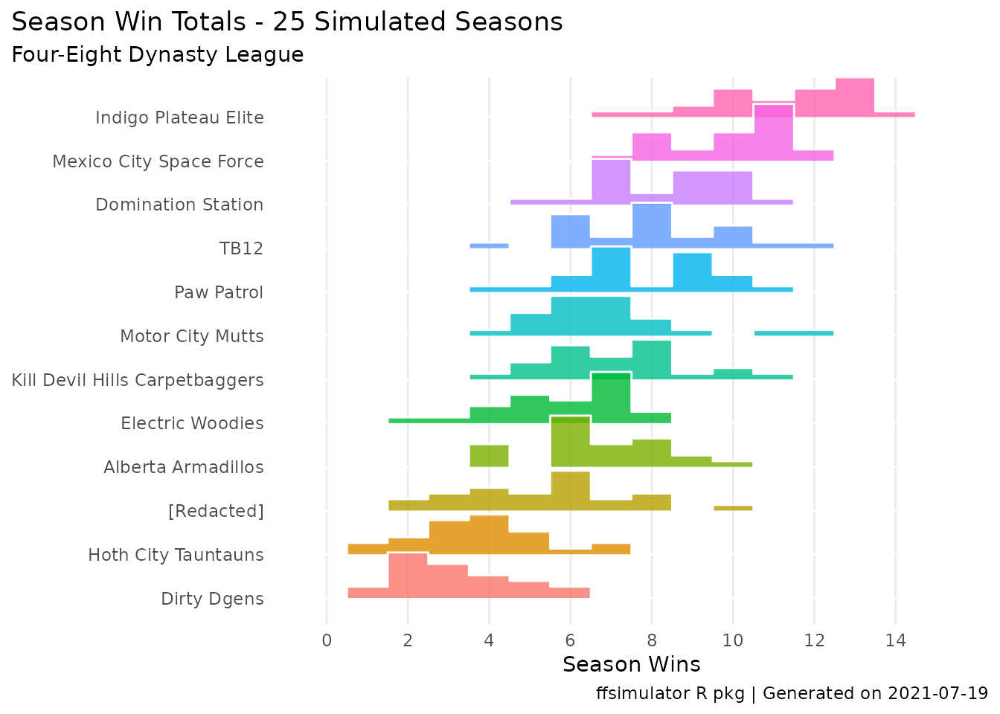
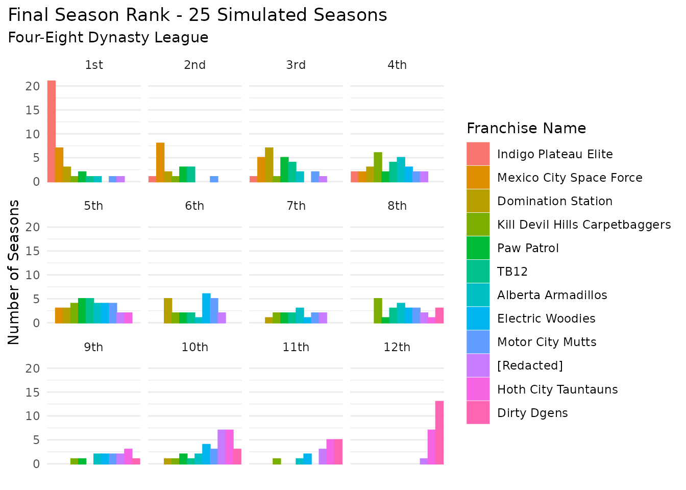
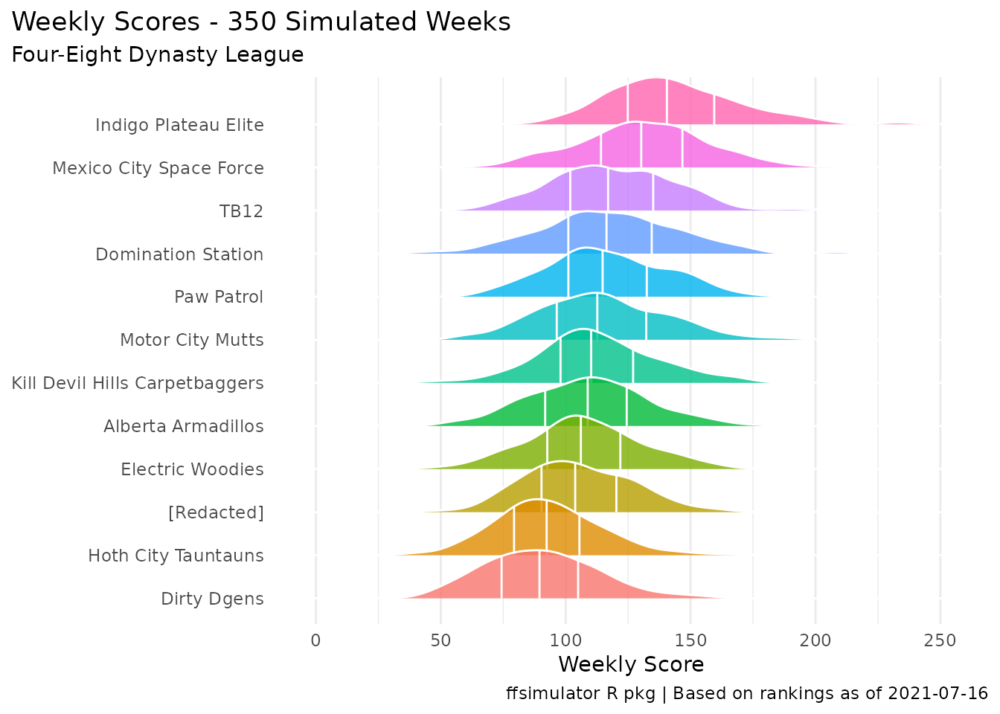
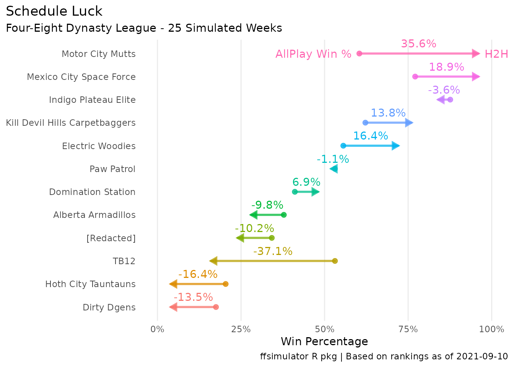
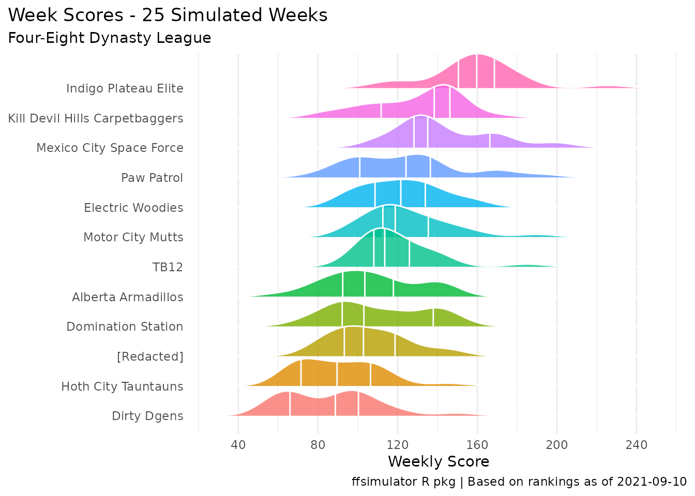

ffsimulator runs simulations on a given fantasy league based that league’s rosters, scoring settings, and current redraft rankings, connecting this data to historical weekly performances for each (preseason) positional ranking.
This vignette will introduce the basic usage of ffsimulator - you may also be interested in the motivations and custom simulations vignettes!
ffsimulator connects directly to your league (via the ffscrapr package) and can be used at a high level with just a few lines of code:
foureight_conn <- mfl_connect(2021, 22627)
foureight_sim <- ff_simulate(conn = foureight_conn, n_seasons = 10, n_weeks = 14)
foureight_sim#> <ff_simulation: 10 simulated seasons of Four-Eight Dynasty League>
#> List of 7
#> $ summary_simulation: tibble [12 × 11] (S3: tbl_df/tbl/data.frame)
#> $ summary_season : tibble [120 × 12] (S3: tbl_df/tbl/data.frame)
#> $ summary_week : tibble [1,680 × 16] (S3: tbl_df/tbl/data.frame)
#> $ roster_scores :Classes 'data.table' and 'data.frame': 51450 obs. of 23 variables:
#> $ projected_scores :Classes 'data.table' and 'data.frame': 51450 obs. of 14 variables:
#> $ league_info : tibble [1 × 17] (S3: tbl_df/tbl/data.frame)
#> $ simulation_params : tibble [1 × 9] (S3: tbl_df/tbl/data.frame)ffsimulator includes a few automatic plots that can be run on this ff_simulation object to get a quick sense of the simulation output:
plot(foureight_sim) # defaults to type = "wins"
plot(foureight_sim, type = "rank")
plot(foureight_sim, type = "points")
#> Picking joint bandwidth of 7.68
You can also access the various component dataframes by name, for further analysis.
The summary_simulation table is a team-level summary across all of the simulated seasons.
foureight_sim$summary_simulation
#> # A tibble: 12 × 11
#> league_id franchise_id franchise_name seasons h2h_wins h2h_winpct
#> <chr> <chr> <chr> <int> <dbl> <dbl>
#> 1 22627 0012 Indigo Plateau Elite 10 12.1 0.864
#> 2 22627 0001 Mexico City Space Force 10 10.6 0.757
#> 3 22627 0007 Paw Patrol 10 7.8 0.557
#> 4 22627 0004 Electric Woodies 10 7.4 0.529
#> 5 22627 0011 TB12 10 7.1 0.507
#> 6 22627 0005 Motor City Mutts 10 7.6 0.543
#> 7 22627 0009 Kill Devil Hills Carpetba… 10 7.3 0.521
#> 8 22627 0008 Domination Station 10 6.3 0.45
#> 9 22627 0003 Alberta Armadillos 10 6.4 0.457
#> 10 22627 0010 [Redacted] 10 5.3 0.379
#> 11 22627 0006 Hoth City Tauntauns 10 3 0.214
#> 12 22627 0002 Dirty Dgens 10 3.1 0.221
#> # … with 5 more variables: allplay_wins <dbl>, allplay_winpct <dbl>,
#> # points_for <dbl>, points_against <dbl>, potential_points <dbl>The summary_season table is a season-level summary of all weeks within those seasons - any one of these seasons “could” theoretically be the outcome of the upcoming season!
foureight_sim$summary_season
#> season league_id franchise_id franchise_name h2h_wins
#> 1: 1 22627 0001 Mexico City Space Force 12
#> 2: 1 22627 0002 Dirty Dgens 0
#> 3: 1 22627 0003 Alberta Armadillos 5
#> 4: 1 22627 0004 Electric Woodies 7
#> 5: 1 22627 0005 Motor City Mutts 10
#> ---
#> 116: 10 22627 0008 Domination Station 5
#> 117: 10 22627 0009 Kill Devil Hills Carpetbaggers 12
#> 118: 10 22627 0010 [Redacted] 7
#> 119: 10 22627 0011 TB12 8
#> 120: 10 22627 0012 Indigo Plateau Elite 11
#> h2h_winpct allplay_wins allplay_games allplay_winpct points_for
#> 1: 0.857 125 154 0.812 2034.086
#> 2: 0.000 27 154 0.175 1187.849
#> 3: 0.357 63 154 0.409 1524.148
#> 4: 0.500 71 154 0.461 1579.101
#> 5: 0.714 80 154 0.519 1635.749
#> ---
#> 116: 0.357 64 154 0.416 1460.263
#> 117: 0.857 88 154 0.571 1629.849
#> 118: 0.500 65 154 0.422 1490.238
#> 119: 0.571 100 154 0.649 1727.765
#> 120: 0.786 133 154 0.864 2066.457
#> points_against potential_points
#> 1: 1622.343 2631.29
#> 2: 1798.732 1502.92
#> 3: 1543.897 1947.87
#> 4: 1694.826 2064.90
#> 5: 1519.509 2138.25
#> ---
#> 116: 1555.725 1901.09
#> 117: 1403.566 2075.04
#> 118: 1469.356 1896.33
#> 119: 1601.649 2215.87
#> 120: 1485.318 2732.65The summary_week table is a week-level summary of each team’s performance, including the optimal lineup that could have been played by the team and the randomly-generated lineup efficiency factor:
foureight_sim$summary_week
#> season season_week franchise_name optimal_score
#> 1: 1 1 Mexico City Space Force 166.65
#> 2: 1 1 Dirty Dgens 145.65
#> 3: 1 1 Alberta Armadillos 108.13
#> 4: 1 1 Electric Woodies 166.51
#> 5: 1 1 Motor City Mutts 148.63
#> ---
#> 1676: 10 14 Domination Station 182.70
#> 1677: 10 14 Kill Devil Hills Carpetbaggers 175.64
#> 1678: 10 14 [Redacted] 134.50
#> 1679: 10 14 TB12 64.17
#> 1680: 10 14 Indigo Plateau Elite 205.99
#> lineup_efficiency team_score opponent_score result
#> 1: 0.691 115.169 76.084 W
#> 2: 0.737 107.286 132.011 L
#> 3: 0.776 83.912 179.982 L
#> 4: 0.793 132.011 107.286 W
#> 5: 0.682 101.357 143.900 L
#> ---
#> 1676: 0.740 135.286 113.904 W
#> 1677: 0.795 139.638 100.899 W
#> 1678: 0.847 113.904 135.286 L
#> 1679: 0.778 49.902 131.653 L
#> 1680: 0.760 156.605 79.371 W
#> opponent_name allplay_wins allplay_games allplay_pct
#> 1: Hoth City Tauntauns 5 11 0.455
#> 2: Electric Woodies 3 11 0.273
#> 3: Indigo Plateau Elite 1 11 0.091
#> 4: Dirty Dgens 7 11 0.636
#> 5: Kill Devil Hills Carpetbaggers 2 11 0.182
#> ---
#> 1676: [Redacted] 8 11 0.727
#> 1677: Mexico City Space Force 9 11 0.818
#> 1678: Domination Station 5 11 0.455
#> 1679: Electric Woodies 0 11 0.000
#> 1680: Hoth City Tauntauns 11 11 1.000
#> league_id franchise_id optimal_player_id
#> 1: 22627 0001 13592,14777,14081,15265,14805,13672,...
#> 2: 22627 0002 12610,11747,13138,14803,15268,12212,...
#> 3: 22627 0003 10700,11644,14075,14087,14806,15261,...
#> 4: 22627 0004 10703,13589,13139,13319,13236,13880,...
#> 5: 22627 0005 13593,9431,12171,13404,14072,12677,...
#> ---
#> 1676: 22627 0008 11760,15240,12164,13604,13607,14798,...
#> 1677: 22627 0009 14059,7836,11657,13108,13133,15505,...
#> 1678: 22627 0010 12140,13116,14223,15254,13680,11671,...
#> 1679: 22627 0011 15239,13131,13850,14828,13192,11232,...
#> 1680: 22627 0012 14056,8062,11193,12626,13130,14852,...
#> optimal_player_score
#> 1: 17.76,18.54, 8.70,23.70,12.10,17.10,...
#> 2: 8.8, 9.7,17.6, 7.7, 8.8,26.2,...
#> 3: 10.42, 7.96,10.10, 8.60,17.50,22.30,...
#> 4: 24.24,25.12, 0.00,21.40,15.25,13.40,...
#> 5: 16.92,14.76,12.10,15.30,11.90,11.85,...
#> ---
#> 1676: 13.78,12.92, 9.40,22.30,20.30, 9.80,...
#> 1677: 29.60,23.64,20.70,11.30,11.70,16.20,...
#> 1678: 20.65,38.60, 4.00, 4.40, 7.85, 8.20,...
#> 1679: 6.12, 8.20,14.70, 2.40, 2.75, 2.40,...
#> 1680: 27.82,25.52, 7.20,18.30,20.70,33.00,...The roster_scores and projected_scores tables both provide individual player-week level scores, with the difference being that the roster_scores table is attached to franchise rosters (and thus duplicates rows if there are multiple copies of players within the league).
foureight_sim$roster_scores
#> fantasypros_id franchise_id franchise_name player_id player_name pos
#> 1: 10007 0007 Paw Patrol 10413 Taylor, Tyrod QB
#> 2: 10007 0007 Paw Patrol 10413 Taylor, Tyrod QB
#> 3: 10007 0007 Paw Patrol 10413 Taylor, Tyrod QB
#> 4: 10007 0007 Paw Patrol 10413 Taylor, Tyrod QB
#> 5: 10007 0007 Paw Patrol 10413 Taylor, Tyrod QB
#> ---
#> 51446: 9907 0007 Paw Patrol 10313 Dalton, Andy QB
#> 51447: 9907 0007 Paw Patrol 10313 Dalton, Andy QB
#> 51448: 9907 0007 Paw Patrol 10313 Dalton, Andy QB
#> 51449: 9907 0007 Paw Patrol 10313 Dalton, Andy QB
#> 51450: 9907 0007 Paw Patrol 10313 Dalton, Andy QB
#> team age salary contract_years roster_status draft_year draft_round
#> 1: HOU 32.1 0.61 1 ROSTER 2011 6
#> 2: HOU 32.1 0.61 1 ROSTER 2011 6
#> 3: HOU 32.1 0.61 1 ROSTER 2011 6
#> 4: HOU 32.1 0.61 1 ROSTER 2011 6
#> 5: HOU 32.1 0.61 1 ROSTER 2011 6
#> ---
#> 51446: CHI 33.9 2.07 4 ROSTER 2011 2
#> 51447: CHI 33.9 2.07 4 ROSTER 2011 2
#> 51448: CHI 33.9 2.07 4 ROSTER 2011 2
#> 51449: CHI 33.9 2.07 4 ROSTER 2011 2
#> 51450: CHI 33.9 2.07 4 ROSTER 2011 2
#> league_id ecr rank projection gp_model season week projected_score
#> 1: 22627 32.93 31 16.04 1 1 1 16.04
#> 2: 22627 32.93 31 16.90 1 1 2 16.90
#> 3: 22627 32.93 31 4.84 0 1 3 0.00
#> 4: 22627 32.93 31 12.68 0 1 4 0.00
#> 5: 22627 32.93 31 21.62 0 1 5 0.00
#> ---
#> 51446: 22627 35.81 37 18.36 1 10 10 0.00
#> 51447: 22627 35.81 37 -1.08 0 10 11 0.00
#> 51448: 22627 35.81 37 0.18 0 10 12 0.00
#> 51449: 22627 35.81 37 9.92 0 10 13 0.00
#> 51450: 22627 35.81 37 45.28 1 10 14 45.28
#> scrape_date pos_rank
#> 1: 2021-09-03 3
#> 2: 2021-09-03 2
#> 3: 2021-09-03 2
#> 4: 2021-09-03 4
#> 5: 2021-09-03 4
#> ---
#> 51446: 2021-09-03 6
#> 51447: 2021-09-03 6
#> 51448: 2021-09-03 6
#> 51449: 2021-09-03 6
#> 51450: 2021-09-03 1Finally, some basic parameters are included, including league_info which is generated by ffscrapr::ff_league().
foureight_sim$league_info
#> # A tibble: 1 × 17
#> league_id league_name season league_type franchise_count qb_type idp
#> <chr> <chr> <int> <chr> <dbl> <chr> <lgl>
#> 1 22627 Four-Eight Dynasty… 2021 dynasty 12 2QB/SF TRUE
#> # … with 10 more variables: scoring_flags <chr>, best_ball <lgl>,
#> # salary_cap <lgl>, player_copies <dbl>, years_active <chr>, qb_count <chr>,
#> # roster_size <dbl>, league_depth <dbl>, draft_type <chr>,
#> # draft_player_pool <chr>As of the 1.1.0 release, ffsimulator also has functions to simulate an individual week, with that week’s FP rankings!
foureight_conn <- mfl_connect(2021, 22627)
foureight_sim_week <- ff_simulate_week(conn = foureight_conn, n = 10)
foureight_sim_week#> <ff_simulation_week: 25 simulated weeks of Four-Eight Dynasty League>
#> List of 6
#> $ summary_simulation:Classes 'data.table' and 'data.frame': 12 obs. of 11 variables:
#> $ summary_week :Classes 'data.table' and 'data.frame': 300 obs. of 16 variables:
#> $ roster_scores :Classes 'data.table' and 'data.frame': 8836 obs. of 23 variables:
#> $ projected_scores :Classes 'data.table' and 'data.frame': 8836 obs. of 13 variables:
#> $ league_info : tibble [1 × 17] (S3: tbl_df/tbl/data.frame)
#> $ simulation_params :List of 7This simulation object has many of the same dataframes, including a summary_simulation, summary_week, roster_scores, projected_scores, league_info, and simulation_params.
It also has some different automatic plots, including one for schedule luck:
plot(foureight_sim_week,type = "luck")
and the usual points distribution:
plot(foureight_sim_week, type = "points")
#> Picking joint bandwidth of 9.54